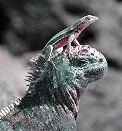

We have a really special trip planned for next February. We have reserved ten cabins on the ship The Wanderer to explore the Galápagos Islands. The departure date is February 5 and the return date is February 21. This trip of a lifetime begins in Guayaquil, Ecuador. Guayaquil is a seaport on the southern coast of Ecuador. You will find it a vibrant center for business and tourism with lots of sites to explore. Stroll along the riverfront to enjoy colorful shops, lush parks, and street entertainment. After a night's rest, you will board your flight to Baltra Island in the Galápagos archipelago.
After arriving at Baltra's airport, you will board a bus for a short ride to the dock. Here you will find a welcoming committee of iguanas and sea lions. These natives love to sun on the docks and don't seem to mind sharing them with you as long as you don't come too close! The Wanderer is an exquisite touring ship licensed to explore the Galápagos by the Ecuadoran government. Tourism to the Galápagos is strictly regulated for the protection of the land, waters, and wildlife. You will use pangas for wet and dry landings to observe the wonderful variety of species of flora and fauna unique to the Galápagos, including the famous blue-footed booby. You will also have opportunities to swim, snorkel, and kayak with penguins. When your time on the ship ends, you will fly to Quito, the second-highest capital city in the world. Quito is a UNESCO World Heritage Site with beautiful colonial architecture. We recommend taking an extra day to explore its rich history and sample Ecuadoran cuisine.
To provide the finest in personal attention, this tour will be limited to no more than twenty people. The price schedule is as follows: Land Tour and Supplemental Group Air, $5,500.00; International Air, $1,350.00; and Single Supplement, $1,000.00. Entrance fees, hotel taxes, and services are included in the Land Tour price. Ship gratuities are also included for the Wanderer crew and guides. A deposit of $500.00 is required at the time the booking is made. Trip insurance and luggage insurance are optional and are also offered for an extra charge. A passport and visa will be required for entry into Ecuador. Call us at 555-555-0807 for further information and the complete itinerary from 8:00 a.m. to 6:00 p.m. (Central Standard Time).